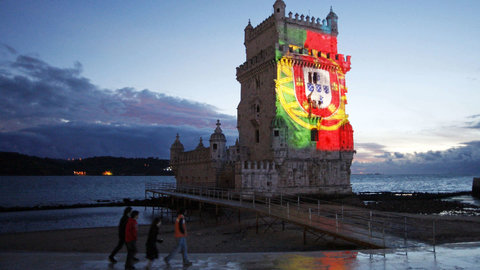
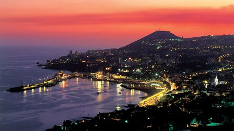
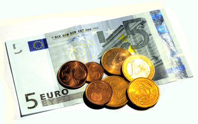

Portugal e sua História

Portugal, oficialmente República Portuguesa, é um país soberano unitário localizado no Sudoeste da Europa, cujo território se situa na zona ocidental da Península Ibérica e em arquipélagos no Atlântico Norte. O território português tem uma área total de 92 090 km², sendo delimitado a norte e leste por Espanha e a sul e oeste pelo oceano Atlântico, compreendendo uma parte continental e duas regiões autónomas: os arquipélagos dos Açores e da Madeira. Portugal é a nação mais a ocidente do continente europeu. O nome do país provém da sua segunda maior cidade, Porto, cujo nome latino-celta era Portus Cale.
Portugal é um país desenvolvido, com um Índice de Desenvolvimento Humano (IDH) considerado como muito elevado. O país foi classificado na 19.ª posição em qualidade de vida (em 2005), tem um dos melhores sistemas de saúde do planeta e é também uma das nações mais globalizadas e pacíficas do mundo. É membro da Organização das Nações Unidas (ONU), da União Europeia (incluindo a Zona Euro e o Espaço Schengen), da Organização do Tratado do Atlântico Norte (NATO), da Organização para a Cooperação e Desenvolvimento Económico (OCDE) e da Comunidade dos Países de Língua Portuguesa (CPLP). Portugal também participa em diversas missões de manutenção de paz das Nações Unidas
Funchal, uma cidade com 500 anos

O Funchal é uma cidade portuguesa na ilha da Madeira, capital da Região Autónoma da Madeira e a mais populosa fora do território continental português. A cidade coincide com o seu concelho, e tem 76,15 km² de área e 111 892 habitantes (2011), subdividindo-se em 10 freguesias. A área metropolitana do Funchal, que inclui os concelhos de Câmara de Lobos, Ribeira Brava, Santa Cruz e Machico, tem uma população superior a 225 mil habitantes.O município é limitado a norte pelo município de Santana, a nordeste por Machico, a leste por Santa Cruz e a oeste por Câmara de Lobos, sendo banhado pelo oceano Atlântico a sul. Foi a João Gonçalves Zarco que coube a capitania da cidade em 1424, ano em que se iniciou o povoamento. As ilhas Selvagens, 250 quilómetros a sul do Funchal, pertencem a este município, havendo desta forma descontinuidade territorial.
Os estudos indicam que o custo de vida na Madeira é inferior ao resto da Europa, na medida em que muitos dos bens são mais baratos do que nos restantes países da União Europeia. Muitos dos estrangeiros a residir na Madeira, provenientes da Europa Ocidental, consideram que o custo de vida é até 50% mais baixo do que o da sua terra natal.
Custo de vida

Os estudos indicam que o custo de vida na Madeira é inferior ao resto da Europa, na medida em que muitos dos bens são mais baratos do que nos restantes países da União Europeia. No entanto, é difícil de calcular o custo médio de vida na Madeira, na medida em que depende das circunstâncias e do tipo de vida de cada indivíduo. Contudo, muitos dos estrangeiros a residir na Madeira, provenientes da Europa Ocidental, consideram que o custo de vida é até 50% mais baixo do que o da sua terra natal.
Alguns exemplos* de custos:
– Aluguer de apartamento de qualidade localizado no Funchal: € 20/m2/mês
– Compra de apartamento de qualidade localizado no Funchal: € 1.250/m2
– Refeição num restaurante de qualidade média alta: € 20/refeição
– Compra de escritórios no centro do Funchal: € 1.750/m2
– Aluguer de escritórios no centro do Funchal: € 20/m2/mês